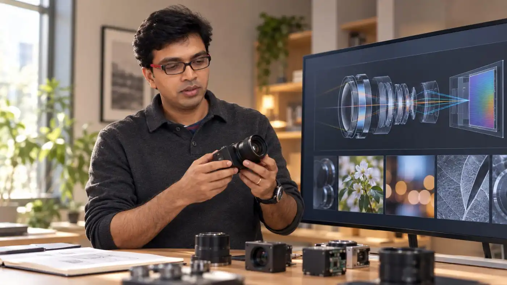

An architect.
A photographic eye.
A practice built around light, computation, and the experience of seeing.
Across disciplines.
Close to the experience.
Manohar Srikanth is a System & Experience Architect at Apple, an MIT-trained researcher in robotics and computational photography, and a photographer.
He originated the disappearing-camera concept and drove its foundational architecture from zero to one. His wider work spans computational imaging, world and user sensing, aerial robotics, and systems designed around human perception.
Photography is a connected practice. He has taught Digital Photography at MIT, photographed for MIT publications, and exhibited his work in Boston.
Living Spaces is a separate exploration of place, comfort and attention to everyday experience.
Read the professional profileDifferent disciplines.
A shared material: light.
Each discipline contributes another way to understand an image, a system, or the person using it.
- MysoreElectrical engineering and signal processing.
- IISc BangaloreComputer science, computer graphics and visualization.
- MITDoctoral research in robotics and computational photography; PhD, 2013.
- Computational camerasPostdoctoral research and the photographic use of computation.
- IndustryApple, Meta, Nokia, Pelican Imaging and work in autonomous imaging systems.
The camera
is also a way of thinking.
Light, composition, skin tones, micro-contrast and the feeling of an image. The photographic eye gives the architecture a perceptual standard.
Explore the photographs
An imagined studio.
A real visual vocabulary.
This illustration was generated using my real DSLR portraits and the visual vocabulary of my work: cameras, lenses and optical prototypes. The scene is imagined.
